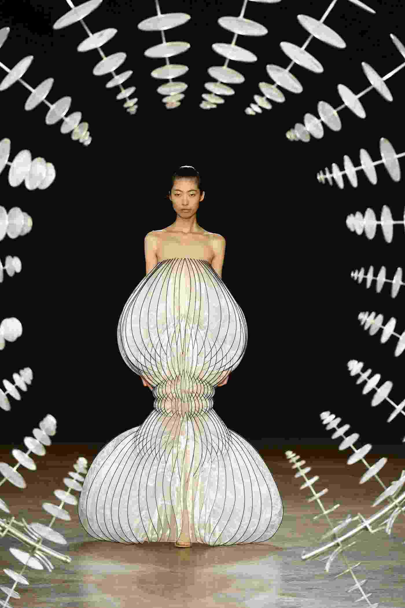
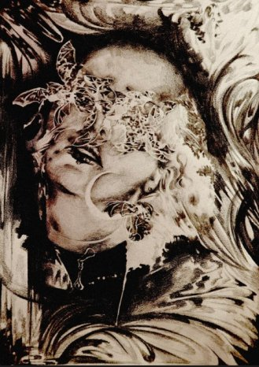
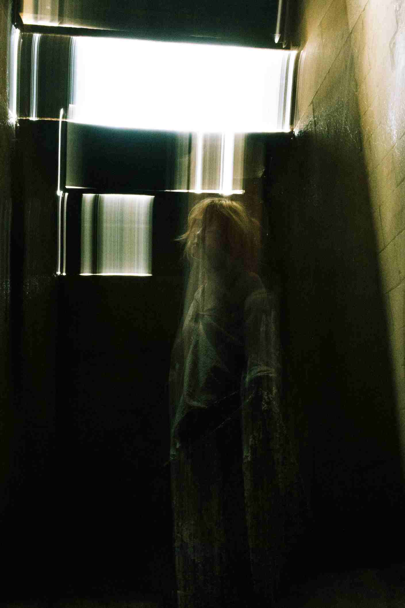
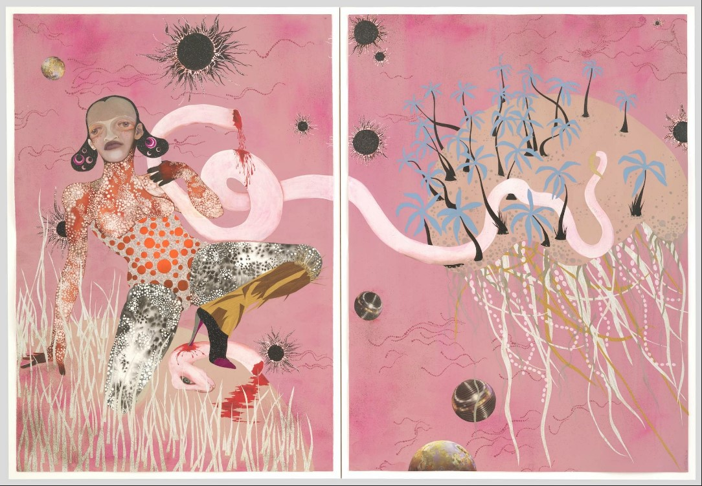
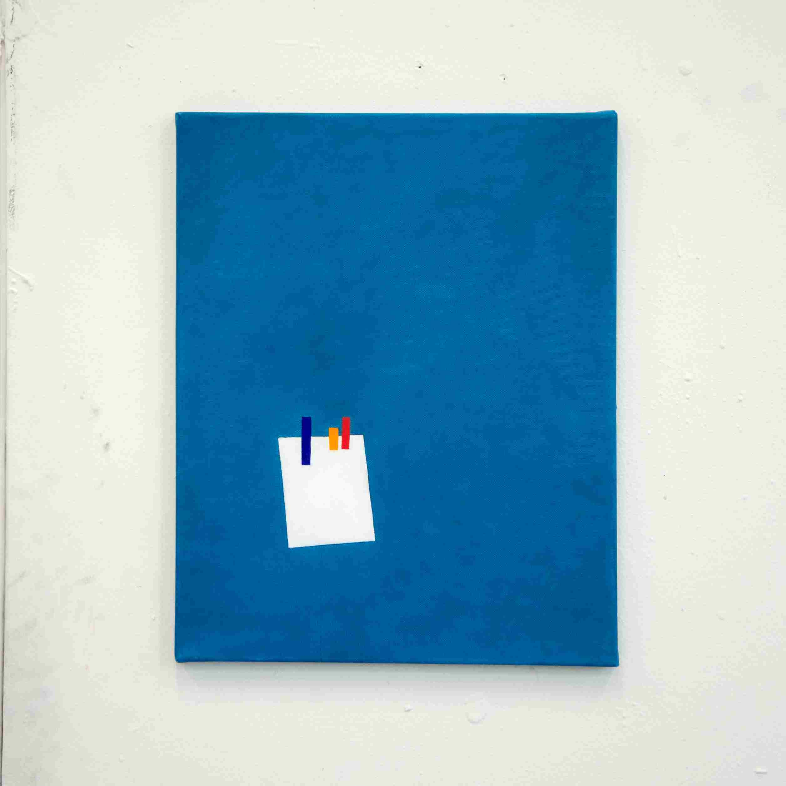

TOKI EASHIR
Gallery 20 is thrilled to announce Toki Eashir’s
first solo exhibition.
A suite of new photos by Toki will be on view at
297 Tenth Avenue from January 11 through February 17, 2024,
showcasing recent technical and thematic developments in
Toki’s photographic practice.
Featured Artwork

Gallery

Iris van Herpen, Epicycle dress, 2019

Maya Rae. Bats for lashes, 2023.

Toki Eashir. Portrait of Maya, 2023

Wangechi Mutu. Yo Mama, 2003.

Toki Eashir. raft on the endless sea, 2023
 Otto Dix. Portrait of the Journalist, 1926
Otto Dix. Portrait of the Journalist, 1926
Artists
- Iris Van Herpen
- Toki Eashir
- Wangechi Mutu
- Maya Rae
- Otto Dix